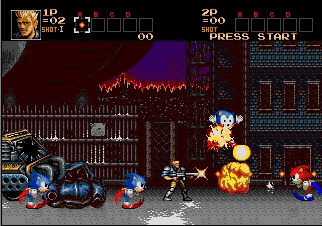
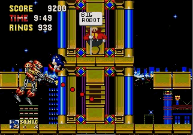
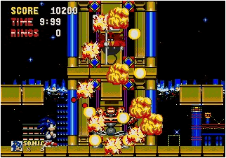
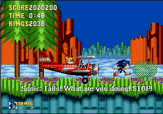
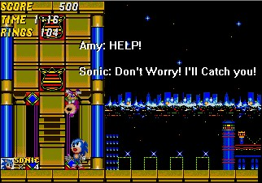
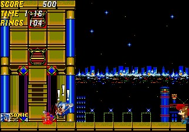
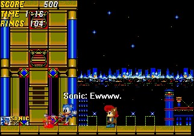
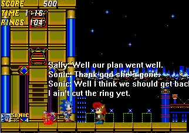

A custom made boss this, apparently located in Scrap Brain Zone. Things are gonna get nasty...
 A very good 2D rendition of City Escape from SA2 no less.
 Sonic dying in Final Rush. Has to be one of the key points to SA2. Erm, no not really then.
 Sonic Vs. Contra, looks like Ray's having a bit of trouble with the turbulent porcupines.
 Sonic against 'Big Robot', it seems. Talk about a bit of a crazy ring count.
 Sonic nobbles 'Big Robot', and Eggman seems to be slightly burned.
 Plainly obvious that Tails has had enough of Sonic. Erm, Score and Rings though? sonic's got quite a while to die, considering he'll grab most of those '2038' rings...
 Quick, quick, Amy's falling! Sonic... why are you saving her? Stop it!
 Oh dear. You missed. Never mind. As Sally runs into the scene, Sonic is -almost- (^_^) horrified.
 Sally doesn't seem that bothered, as Sonic... steps(?) in Amy's remaining 'bits'.
 Ah, so it was all a devious ploy all along. If I were Sonic, I just wouldn't have bothered... Notice how the whole event happened without a second passing? (Look at the Time counters at the top of each hoax...) ^_^
| | | | | | | | | | | | | | | | | | | | | |